CH 5.4 – Graphing Trigonometric Functions
As with any type of function, it should come as no surprise that trigonometric functions can be graphed. While graphing trigonometric functions is different from graphing a polynomial function, they still hold some similarities, such as taking a transformative approach to graphing them.
Both the Sine and Cosine functions are examples of periodic functions. A function is said to be periodic if there is a real number \(c\) such that \(f(t+c)=f(t)\). This suggests that there is some amount by which you could horizontally shift the graph and it would be the exact same graph that you started with. When it comes to graphing trigonometric functions, the use of the Unit Circle is essential. By using the Unit Circle we have provided the two basic graphs of the Sine and Cosine functions. It would be in your best interest to memorize these first initial five points.
The Fundamental Cycle of Sine
| \(x\) | \(\sin(x)\) | \((x,\sin(x))\) |
|---|---|---|
| \(0\) | \(0\) | \((0,0)\) |
| \(\dfrac{\pi}{2}\) | \(1\) | \(\left(\dfrac{\pi}{2},1\right)\) |
| \(\pi\) | \(0\) | \((\pi,0)\) |
| \(\dfrac{3\pi}{2}\) | \(-1\) | \(\left(\dfrac{3\pi}{2},-1\right)\) |
| \(2\pi\) | \(0\) | \((2\pi,0)\) |
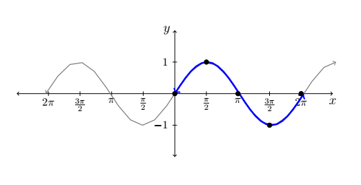
If you were to work your way around the unit circle you'd find each of those values. Recall that we learned in the unit circle section that Sine values correspond to the \(y\)-coordinates.
The Fundamental Cycle of Cosine
| \(x\) | \(\cos(x)\) | \((x,\cos(x))\) |
|---|---|---|
| \(0\) | \(1\) | \((0,1)\) |
| \(\dfrac{\pi}{2}\) | \(0\) | \(\left(\dfrac{\pi}{2},0\right)\) |
| \(\pi\) | \(-1\) | \((\pi,-1)\) |
| \(\dfrac{3\pi}{2}\) | \(0\) | \(\left(\dfrac{3\pi}{2},0\right)\) |
| \(2\pi\) | \(1\) | \((2\pi,1)\) |
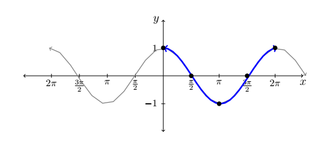
Now that we've looked at the basic graphs of both functions, it is important to note that both of these functions are cyclic. You should be able to notice that both functions have a range that alternates between \(-1 \le y \le 1\), meaning they cycle between those two values like a ball bouncing between two walls if gravity weren't an issue.
Properties of the Sine and Cosine Functions
The Function \(f(x)=\sin(x)\)
- has domain \((-\infty,\infty)\)
- has range \([-1,1]\)
- is continuous and smooth
- is odd
- has a period of \(2\pi\)
The Function \(g(x)=\cos(x)\)
- has domain \((-\infty,\infty)\)
- has range \([-1,1]\)
- is continuous and smooth
- is even
- has a period of \(2\pi\)
In Precalculus I, we discussed transformations of parent functions. We are going to extend that same idea into trigonometric functions. Each trigonometric function is made up of pieces that help us understand the behavior of the graph. Just like with parent functions, not all transformations are always present. But with trigonometric functions there are two characteristics that are always present in the graph.
The period and amplitude are two components that the Sine and Cosine functions will always have. The period is how long it takes our function to make one full rotation or one complete cycle of the graph. The amplitude is the height of the graph — how tall it is. Both are displayed in the figures below with respect to the Sine and Cosine functions.
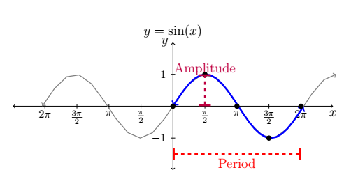
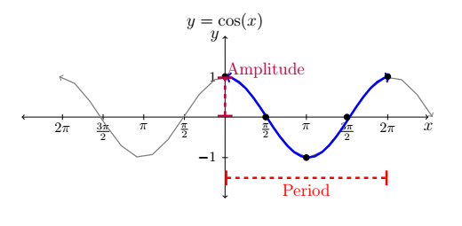
The other transformations that a trigonometric function can undergo are a phase shift and a vertical shift. A phase shift is the equivalent of a horizontal translation. The graph below represents a Sine function that has undergone a phase shift of \(\dfrac{\pi}{2}\) to the right and a vertical shift of two.
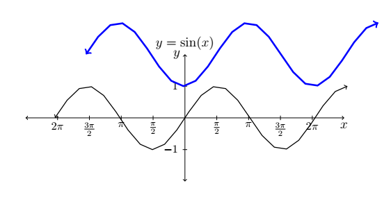
Notice how the blue line is now two units above where it was compared to the black line, and it is shifted to the right. Also notice how a horizontal shift of \(\dfrac{\pi}{2}\) units right has transformed our Sine function into a Cosine function.
Now that we see what it looks like graphically, let's talk about what this would look like in an equation.
Function Characteristics
\(f(x)=A\sin(Bx-C)+D \quad \text{and} \quad g(x)=A\cos(Bx-C)+D\)
- Period \(=\dfrac{2\pi}{B}\)
- Amplitude \(=|A|\)
- Phase Shift \(=\dfrac{C}{B}\)
- Vertical Shift \(=D\)
Example 1
Identify the amplitude, period, phase shift, and vertical shift of the following functions.
- \(y=2\cos\!\left(x-\dfrac{\pi}{2}\right)\)
- \(y=-\dfrac{1}{2}\sin(3x+\pi)\)
- \(y=\cos\!\left(\dfrac{x}{3}\right)+2\)
Solution
1. In \(y=2\cos\!\left(x-\dfrac{\pi}{2}\right)\), we first identify what each variable is, then use those to find each transformation.
\(A=2\)
\(B=1\)
\(C=\dfrac{\pi}{2}\)
\(D=0\)
Amplitude: \(|A|=|2|=2\)
Period: \(\dfrac{2\pi}{B}=\dfrac{2\pi}{1}=2\pi\)
Phase Shift: \(\dfrac{C}{B}=\dfrac{\pi/2}{1}=\dfrac{\pi}{2}\) (right)
Vertical Shift: \(D=0\) — there is no vertical shift.
2. In \(y=-\dfrac{1}{2}\sin(3x+\pi)\), we identify each variable and find each transformation.
\(A=-\dfrac{1}{2}\)
\(B=3\)
\(C=-\pi\)
\(D=0\)
Amplitude: \(|A|=\left|-\dfrac{1}{2}\right|=\dfrac{1}{2}\)
Period: \(\dfrac{2\pi}{B}=\dfrac{2\pi}{3}\)
Phase Shift: \(\dfrac{C}{B}=\dfrac{-\pi}{3}\) (left)
Vertical Shift: \(D=0\) — once again there is no vertical shift.
3. In \(y=\cos\!\left(\dfrac{x}{3}\right)+2\), we identify each variable and find each transformation.
\(A=1\)
\(B=\dfrac{1}{3}\)
\(C=0\)
\(D=2\)
Amplitude: \(|A|=|1|=1\)
Period: \(\dfrac{2\pi}{B}=\dfrac{2\pi}{1/3}=6\pi\)
Phase Shift: \(\dfrac{C}{B}=\dfrac{0}{1/3}=0\) — there is no phase shift.
Vertical Shift: \(D=2\) (up 2 units)
Graphing Transformed Sine and Cosine Functions
The way that this section is taught could differ from instructor to instructor, so please note that even though we are using one method in this section, your specific instructor may choose another approach. As always, the instructor is always correct — just do as they instruct.
We are going to start with the equation \(y=2\sin(2x)\). This equation is on the simpler side to begin with. As with the previous examples we need to first identify our amplitude, period, phase shift, and vertical translation. From looking at the equation we have no \(C\) and no \(D\), which tells us there is no phase shift and no vertical shift. But we can see that \(A=2\) and \(B=2\), meaning our amplitude is \(2\) and our period is \(\dfrac{2\pi}{2}=\pi\). That tells us that by the time we get to \(2\pi\), our Sine function will have made two full rotations.
So if it makes two full rotations, how often do we need to add a point? There are four points after the initial starting point of each graph. If you take your period and divide it by four, you'll find out how often you need to include a point: \(\dfrac{\pi}{4}\) would be how often we need to include the points.
Let's look at the changes we've made to the graph. The equation and points in black represent the original function \(y=\sin(x)\); the points in blue are the points of the function \(y=\sin(2x)\):
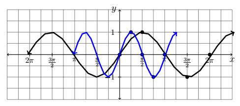
One thing you should notice is that when you change the period, the amplitude did not change. Think of it like a slinky: when you pull it apart, the metal loops stay the same size — all that changes is the space between the spirals. When the period is less than \(2\pi\), it is the equivalent of compressing the slinky or a spring.
Now we are ready to change the amplitude. When you change the amplitude it has no effect on the zeros of the function — the places where the equation crosses the \(x\)-axis. All the amplitude does is stretch the peaks and valleys. So all of our points at \(1\) and \(-1\) will have their \(y\)-coordinate multiplied by \(2\). Applying that transformation to the blue graph gives us our final result, shown below in red.
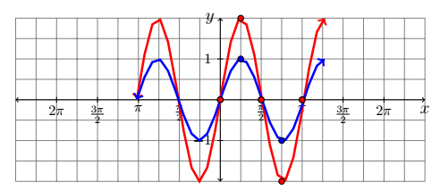
Now if we remove the blue graph we have our finished product:
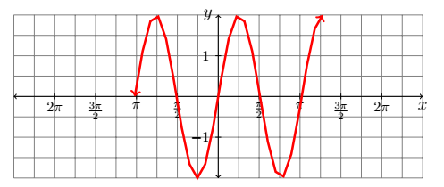
It would be great if one example were enough to master graphing trigonometric functions — but it takes a lot of practice. Let's look at a few more examples.
Example 2
Graph at least one full cycle of each function below using transformative graphing.
- \(g(x)=\sin\!\left(\dfrac{1}{3}x-\pi\right)+1\)
- \(h(x)=-2\cos\!\left(x+\dfrac{\pi}{2}\right)\)
Solution
1. Let's look at \(g(x)=\sin\!\left(\dfrac{1}{3}x-\pi\right)+1\). This graph has a number of different transformations. Start by identifying the amplitude, period, phase shift, and vertical translation — this should always be your starting place.
- Amplitude: \(|A|=|1|=1\) — no change in height.
- Period: \(\dfrac{2\pi}{B}=\dfrac{2\pi}{1/3}=6\pi\) — the graph makes one full rotation by \(6\pi\), which is three times around the unit circle.
- Phase Shift: \(\dfrac{\pi}{1/3}=3\pi\) (right)
- Vertical Shift: \(D=1\) — shift the entire graph up 1 unit.
We always start with the original function \(y=\sin(x)\). Since the period is \(6\pi\), we need a point every \(\dfrac{6\pi}{4}=\dfrac{3\pi}{2}\). Using the applet below, move the slider to 1/3 for b, this is the variable that controls your period.
Our next step is to take all of our individual points and move them \(3\pi\) to the right. Using the applet below take the slider for c and move it to \(\pi\).
Finally, we shift the entire graph up 1 unit. To accomplish that we use the slider for d. Move the slider for d to 1.
Make sure you're taking notes at how the graph transforms through each step.
2. Let's look at \(h(x)=-2\cos\!\left(x+\dfrac{\pi}{2}\right)\). Identify the transformations first:
- Amplitude: \(|A|=|-2|=2\). Note that the negative sign means a reflection over the \(x\)-axis and should not be ignored when graphing.
- Period: No period change — the period is \(2\pi\).
- Phase Shift: \(\dfrac{C}{B}=\dfrac{-\pi/2}{1}=-\dfrac{\pi}{2}\) (left)
- Vertical Shift: None — there is no \(D\) term.
We start by shifting all points of the original Cosine function \(\dfrac{\pi}{2}\) to the left. Transform the general Cosine function below by moving the appropriate slider. Take note of how the function changes are the different characteristics change.
Graphs of the Secant and Cosecant Functions
We now turn our attention to graphing \(y = \sec(x)\). Since \(\sec(x) = \dfrac{1}{\cos(x)}\), we can use our table of values for \(y = \cos(x)\) and take reciprocals. The domain of \(y = \sec(x)\) excludes all odd multiples of \(\dfrac{\pi}{2}\), and we run into trouble at \(x = \dfrac{\pi}{2}\) and \(x = \dfrac{3\pi}{2}\) since \(\cos(x) = 0\) at these values. Below we graph a fundamental cycle of \(y = \sec(x)\) along with a more complete graph obtained by the usual copying and pasting.
| \(x\) | \(\cos(x)\) | \(\sec(x)\) | \((x,\sec(x))\) |
|---|---|---|---|
| \(0\) | \(1\) | \(1\) | \((0,1)\) |
| \(\dfrac{\pi}{4}\) | \(\dfrac{\sqrt{2}}{2}\) | \(\sqrt{2}\) | \(\left(\dfrac{\pi}{4},\sqrt{2}\right)\) |
| \(\dfrac{\pi}{2}\) | \(0\) | undefined | |
| \(\dfrac{3\pi}{4}\) | \(-\dfrac{\sqrt{2}}{2}\) | \(-\sqrt{2}\) | \(\left(\dfrac{3\pi}{4},-\sqrt{2}\right)\) |
| \(\pi\) | \(-1\) | \(-1\) | \((\pi,-1)\) |
| \(\dfrac{5\pi}{4}\) | \(-\dfrac{\sqrt{2}}{2}\) | \(-\sqrt{2}\) | \(\left(\dfrac{5\pi}{4},-\sqrt{2}\right)\) |
| \(\dfrac{3\pi}{2}\) | \(0\) | undefined | |
| \(\dfrac{7\pi}{4}\) | \(\dfrac{\sqrt{2}}{2}\) | \(\sqrt{2}\) | \(\left(\dfrac{7\pi}{4},\sqrt{2}\right)\) |
| \(2\pi\) | \(1\) | \(1\) | \((2\pi,1)\) |
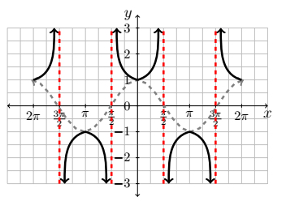
Please note that in the graph of the Secant function, the dashed graph of the Cosine function would not normally appear. It is shown here only to help set up the Secant function.
To graph \(y = \csc(x)\) we begin with \(y = \sin(x)\) and take reciprocals of the corresponding \(y\)-values. We encounter issues at \(x = 0\), \(x = \pi\), and \(x = 2\pi\). Below we graph the fundamental cycle of \(y = \csc(x)\) along with the dotted graph of \(y=\sin(x)\) for reference. Since \(y = \sin(x)\) and \(y = \cos(x)\) are merely phase shifts of each other, so too are \(y = \csc(x)\) and \(y = \sec(x)\).
| \(x\) | \(\sin(x)\) | \(\csc(x)\) | \((x,\csc(x))\) |
|---|---|---|---|
| \(0\) | \(0\) | undefined | |
| \(\dfrac{\pi}{4}\) | \(\dfrac{\sqrt{2}}{2}\) | \(\sqrt{2}\) | \(\left(\dfrac{\pi}{4},\sqrt{2}\right)\) |
| \(\dfrac{\pi}{2}\) | \(1\) | \(1\) | \(\left(\dfrac{\pi}{2},1\right)\) |
| \(\dfrac{3\pi}{4}\) | \(\dfrac{\sqrt{2}}{2}\) | \(\sqrt{2}\) | \(\left(\dfrac{3\pi}{4},\sqrt{2}\right)\) |
| \(\pi\) | \(0\) | undefined | |
| \(\dfrac{5\pi}{4}\) | \(-\dfrac{\sqrt{2}}{2}\) | \(-\sqrt{2}\) | \(\left(\dfrac{5\pi}{4},-\sqrt{2}\right)\) |
| \(\dfrac{3\pi}{2}\) | \(-1\) | \(-1\) | \(\left(\dfrac{3\pi}{2},-1\right)\) |
| \(\dfrac{7\pi}{4}\) | \(-\dfrac{\sqrt{2}}{2}\) | \(-\sqrt{2}\) | \(\left(\dfrac{7\pi}{4},-\sqrt{2}\right)\) |
| \(2\pi\) | \(0\) | undefined |
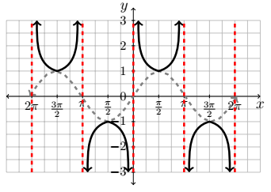
Note that on the intervals between the vertical asymptotes, both \(y = \sec(x)\) and \(y = \csc(x)\) are continuous and smooth on their domains.
Example 3
Graph the following functions.
- \(y=\csc(2x-\pi)\)
- \(y=-\dfrac{1}{2}\sec(x)\)
Solution
1. When graphing the Cosecant function, it is often easiest to graph the corresponding Sine function first and then "cut" and "flip" to make it Cosecant. Instead of graphing \(y=\csc(2x-\pi)\) directly, try graphing \(y=\sin(2x-\pi)\) first. From either function we can determine that the period is \(\dfrac{2\pi}{2}=\pi\), which means we need a point every \(\dfrac{\pi}{4}\). The phase shift is \(\dfrac{\pi}{2}\) to the right.
Next we place a vertical asymptote everywhere the sine function crosses the \(x\)-axis and "cutting" and "flipping" those segments gives us \(y=\csc(2x-\pi)\).
Using the applet below to graph the transformed function. Note that the gray dashed line represents the reciprocal function Sine with the same transformations. Using the sliders move the correct variable to make the graph match the equation given.
Feel free to use the applet to see how the function changes as each variable is manipulated. Take note how the sine function and cosecant function relate to each other.
2. To graph \(y=-\dfrac{1}{2}\sec(x)\), we take a similar approach by transforming the Cosine function to \(y=-\dfrac{1}{2}\cos(x)\). There is no period change, no phase shift, and no vertical translation. The only changes are a reflection over the \(x\)-axis and an amplitude decrease to \(\dfrac{1}{2}\). Note that Secant functions do not technically have an amplitude, but the coefficient does change the depth of each "U" in the graph. use the applet below to graph the transformed function. Note that the gray dashed line represents the reciprocal function Cosine with the same transformations. Using the sliders move the correct varible to make the graph match the equation given.
Before moving on, note that it is possible to speak of the period, phase shift, and vertical shift of Secant and Cosecant graphs, and to use even/odd identities to put them in a form similar to the sinusoidal forms. Since these quantities match those of the corresponding Cosine and Sine curves, we do not spell this out explicitly. Finally, since the ranges of Secant and Cosecant are unbounded, there is no amplitude associated with these curves.
Graphs of the Tangent and Cotangent Functions
Finally, we turn our attention to the graphs of the tangent and cotangent functions. When constructing a table of values for the tangent function, we see that \(\tan(x)\) is undefined at \(x=\dfrac{\pi}{2}\) and \(x=\dfrac{3\pi}{2}\). As \(x \to \dfrac{\pi}{2}^{-}\), \(\sin(x) \to 1^{-}\) and \(\cos(x) \to 0^{+}\), so \(\tan(x) = \dfrac{\sin(x)}{\cos(x)} \to \infty\), producing a vertical asymptote at \(x=\dfrac{\pi}{2}\). Using a similar analysis, as \(x \to \dfrac{\pi}{2}^{+}\), \(\tan(x) \to -\infty\); as \(x \to \dfrac{3\pi}{2}^{-}\), \(\tan(x) \to \infty\); and as \(x \to \dfrac{3\pi}{2}^{+}\), \(\tan(x) \to -\infty\).
| \(x\) | \(\tan(x)\) | \((x,\tan(x))\) |
|---|---|---|
| \(0\) | \(0\) | \((0,0)\) |
| \(\dfrac{\pi}{4}\) | \(1\) | \(\left(\dfrac{\pi}{4},1\right)\) |
| \(\dfrac{\pi}{2}\) | undefined | |
| \(\dfrac{3\pi}{4}\) | \(-1\) | \(\left(\dfrac{3\pi}{4},-1\right)\) |
| \(\pi\) | \(0\) | \((\pi,0)\) |
| \(\dfrac{5\pi}{4}\) | \(1\) | \(\left(\dfrac{5\pi}{4},1\right)\) |
| \(\dfrac{3\pi}{2}\) | undefined | |
| \(\dfrac{7\pi}{4}\) | \(-1\) | \(\left(\dfrac{7\pi}{4},-1\right)\) |
| \(2\pi\) | \(0\) | \((2\pi,0)\) |
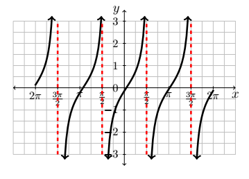
From the graph, the tangent function appears to be periodic with period \(\pi\). To prove this, we use the sum formula for tangents:
\[ \tan(x+\pi) = \dfrac{\tan(x) + \tan(\pi)}{1 - \tan(x)\tan(\pi)} = \dfrac{\tan(x) + 0}{1 - (\tan(x))(0)} = \tan(x), \]
which confirms the period of \(\tan(x)\) is at most \(\pi\). To show it is exactly \(\pi\), suppose \(p\) is a positive real number such that \(\tan(x+p) = \tan(x)\) for all \(x\). For \(x=0\), we have \(\tan(p) = \tan(0) = 0\), which means \(p\) is a multiple of \(\pi\). The smallest positive multiple of \(\pi\) is \(\pi\) itself. We take as our fundamental cycle for \(y=\tan(x)\) the interval \(\left(-\dfrac{\pi}{2}, \dfrac{\pi}{2}\right)\), with quarter marks \(x = -\dfrac{\pi}{2},\, -\dfrac{\pi}{4},\, 0,\, \dfrac{\pi}{4},\, \dfrac{\pi}{2}\).
It should be no surprise that \(\cot(x)\) behaves similarly to \(\tan(x)\). Plotting \(\cot(x)\) over \([0,2\pi]\) results in the graph below.
| \(x\) | \(\cot(x)\) | \((x,\cot(x))\) |
|---|---|---|
| \(0\) | undefined | |
| \(\dfrac{\pi}{4}\) | \(1\) | \(\left(\dfrac{\pi}{4},1\right)\) |
| \(\dfrac{\pi}{2}\) | \(0\) | \(\left(\dfrac{\pi}{2},0\right)\) |
| \(\dfrac{3\pi}{4}\) | \(-1\) | \(\left(\dfrac{3\pi}{4},-1\right)\) |
| \(\pi\) | undefined | |
| \(\dfrac{5\pi}{4}\) | \(1\) | \(\left(\dfrac{5\pi}{4},1\right)\) |
| \(\dfrac{3\pi}{2}\) | \(0\) | \(\left(\dfrac{3\pi}{2},0\right)\) |
| \(\dfrac{7\pi}{4}\) | \(-1\) | \(\left(\dfrac{7\pi}{4},-1\right)\) |
| \(2\pi\) | undefined |
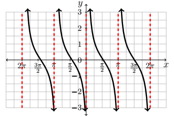
From these data, the period of \(\cot(x)\) is clearly \(\pi\). We take as one fundamental cycle the interval \((0,\pi)\) with quarter marks: \(x = 0,\, \dfrac{\pi}{4},\, \dfrac{\pi}{2},\, \dfrac{3\pi}{4},\, \pi\). The Cotangent function mimics the Tangent function — the asymptotes now occur where Cosine is zero, and the S-shape reflects horizontally.
Example 4
Graph each of the following functions.
- \(y=\tan\!\left(x+\dfrac{\pi}{4}\right)\)
- \(y=3\cot(2x)\)
Solution
1. To graph \(y=\tan\!\left(x+\dfrac{\pi}{4}\right)\), use transformative graphing. The only transformation present is a phase shift of \(\dfrac{\pi}{4}\) to the left — the entire graph moves left \(\dfrac{\pi}{4}\). Using the applet below drag that appropriate slider to the number needed to complete the graph.
Notice how the shape did not change — all that changed is that the entire graph shifted left, including the asymptotes.
2. To graph \(y=3\cot(2x)\), first note the period change: \(\dfrac{\pi}{B}=\dfrac{\pi}{2}\), meaning everything is cut in half. Using the applet below, move the b slider to 2 and observe how the graph is changed.
Our next step is to scale each \(y\)-value by \(3\). The table below shows the updated key values:
| \(x\) | \(3\cot(x)\) | \((x, 3\cot(x))\) |
|---|---|---|
| \(0\) | undefined | |
| \(\dfrac{\pi}{4}\) | \(3\) | \(\left(\dfrac{\pi}{4},3\right)\) |
| \(\dfrac{\pi}{2}\) | \(0\) | \(\left(\dfrac{\pi}{2},0\right)\) |
| \(\dfrac{3\pi}{4}\) | \(-3\) | \(\left(\dfrac{3\pi}{4},-3\right)\) |
| \(\pi\) | undefined |
To observe how the amplitude changes the graph, using the applet below move the a slider to 3 and observe how the graph is changed. Feel free to move each slider around to observe the changes the graph undergoes with each variable.
Notice how the graph didn't change dramatically, but it did get "stretched" vertically. Instead of a tight S-shape it now resembles more of a slanted line between each pair of asymptotes.